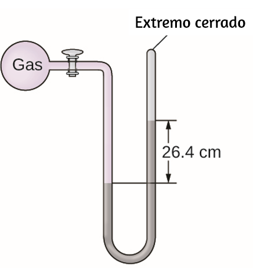
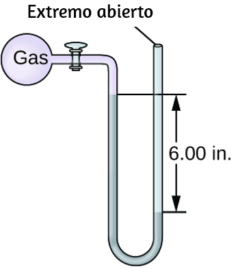
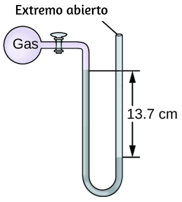
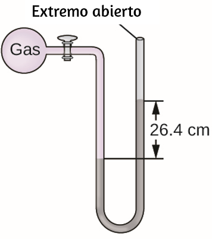
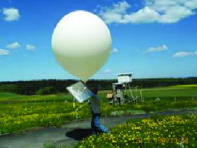
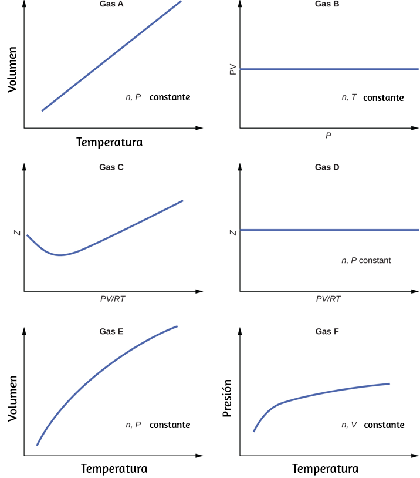
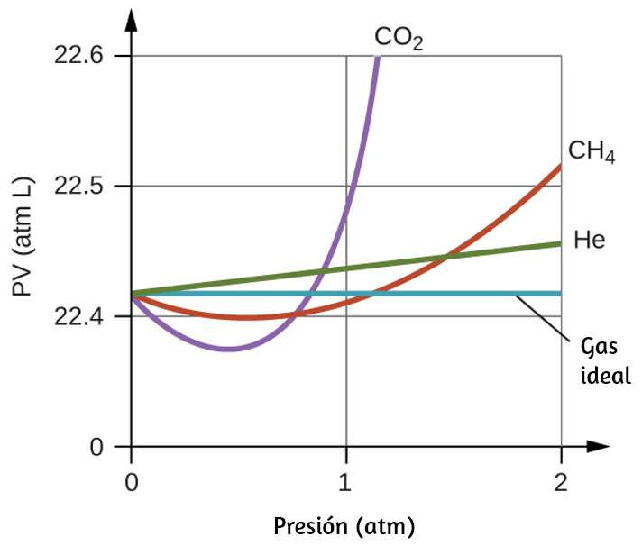

1. ¿Por qué los cuchillos afilados son más efectivos que los cuchillos sin filo? (Sugerencia: piensa en la definición de presión).
2. ¿Por qué algunos puentes pequeños tienen límites de peso que dependen de cuántas ruedas o ejes tiene el vehículo de cruce?
3. ¿Por qué debería rodar o arrastrarse por el vientre en lugar de cruzar un estanque congelado?
4. Una presión barométrica típica en Redding, California, es de aproximadamente 750 mm Hg. Calcula esta presión en atm y kPa.
5. Una presión barométrica típica en Denver, Colorado, es de 615 mm Hg. ¿Cuál es esta presión en atmósferas y kilopascales?
6. Una presión barométrica típica en Kansas City es de 740 torr. ¿Cuál es esta presión en atmósferas, en milímetros de mercurio y en kilopascales?
7. Los medidores de presión de neumáticos canadienses están marcados en unidades de kilopascales. ¿Qué lectura en tal indicador corresponde a 32 psi?
8. Durante los desembarcos vikingos en Marte, se determinó que la presión atmosférica era en promedio de aproximadamente 6.50 milibares (1 bar = 0.987 atm). ¿Cuál es esa presión en torr y kPa?
9. La presión de la atmósfera en la superficie del planeta Venus es de aproximadamente 88.8 atm. Compara esa presión en psi con la presión normal en la tierra al nivel del mar en psi.
10. Un catálogo de laboratorio médico describe la presión en un cilindro de gas como 14.82 MPa. ¿Cuál es la presión de este gas en atmósferas y torr?
11. Considera este escenario y responda las siguientes preguntas: en un día de mediados de agosto en el noreste de los Estados Unidos, apareció la siguiente información en el periódico local: presión atmosférica al nivel del mar 29.97 in. Hg, 1013.9 mbar. (A) ¿Qué era? la presión en kPa? (b) La presión cerca de la costa del noreste de los Estados Unidos generalmente se reporta cerca de 30.0 pulg. Hg. Durante un huracán, la presión puede caer a cerca de 28.0 pulg. Hg. Calcula la caída de presión en torr.
12. ¿Por qué es necesario usar un líquido no volátil en un barómetro o manómetro?
13. La presión de una muestra de gas se mide al nivel del mar con un manómetro cerrado. El líquido en el manómetro es mercurio. Determina la presión del gas en: (a) torr (b) Pa (c) bar

14. La presión de una muestra de gas se mide con un manómetro abierto, parcialmente mostrado a la derecha. El líquido en el manómetro es mercurio. Asumiendo que la presión atmosférica es de 29.92 pulg. Hg, determina la presión del gas en: (a) torr (b) Pa (c) bar

15. La presión de una muestra de gas se mide al nivel del mar con un manómetro de mercurio de extremo abierto. Suponiendo que la presión atmosférica es de 760.0 mm Hg, determina la presión del gas en: (a) mm Hg (b) atm (c) kPa

16. La presión de una muestra de gas se mide al nivel del mar con un manómetro de mercurio de extremo abierto. Suponiendo que la presión atmosférica es de 760 mm Hg, determina la presión del gas en: (a) mm Hg (b) atm (c) kPa

18. A veces, dejar una bicicleta al sol en un día caluroso puede causar un reventón. ¿Por qué?
19. Explica cómo cambia el volumen de las burbujas agotadas por un buzo (Figura 8.16) a medida que suben a la superficie, suponiendo que permanecen intactas.
20. Una forma de establecer la ley de Boyle es "Todas las demás cosas son iguales, la presión de un gas es inversamente proporcional a su volumen". (a) ¿Cuál es el significado del término "inversamente proporcional?" (b) ¿Cuáles son las ¿"Otras cosas" que deben ser iguales?
21. Una forma alternativa de enunciar la ley de Avogadro es "En igualdad de condiciones, el número de moléculas en un gas es directamente proporcional al volumen del gas". (a) ¿Cuál es el significado del término "directamente proporcional"? (b) ¿Cuáles son las "otras cosas" que deben ser iguales?
22. ¿Cómo cambiaría el gráfico de la figura 8.12 si se duplicara el número de moles de gas en la muestra utilizada para determinar la curva?
23. ¿Cómo cambiaría el gráfico de la figura 8.13 si se duplicara el número de moles de gas en la muestra utilizada para determinar la curva?
24. Además de los datos encontrados en la figura 8.13, ¿qué otra información necesitamos para encontrar la masa de la muestra de aire utilizada para determinar el gráfico?
25. Determina el volumen de 1 mol de gas $CH_4$ a 150 K y 1 atm, usando la figura figura 8.12.
26. Determina la presión del gas en la jeringa que se muestra en la figura 8.13 cuando su volumen es de 12.5 ml, utilizando: (a) el gráfico apropiado (b) La Ley de Boyle
27. Se usa una lata de aerosol hasta que esté vacía, excepto el gas propulsor, que tiene una presión de 1344 torr a 23 °C. Si la lata se arroja al fuego (T = 475 °C), ¿cuál será la presión en la lata caliente?
28. ¿Cuál es la temperatura de una muestra de 11.2 L de monóxido de carbono, $CO$, a 744 torr si ocupa 13.3 L a 55 °C y 744 torr?
29. Un volumen de hidrógeno de 2.50 L medido a –196 °C se calienta a 100 °C. Calcula el volumen del gas a la temperatura más alta, suponiendo que no haya cambios en la presión.
30. Un globo inflado con tres respiraciones de aire tiene un volumen de 1.7 L. A la misma temperatura y presión, ¿cuál es el volumen del globo si se agregan cinco respiraciones más del mismo tamaño?
31. Un globo meteorológico contiene 8,80 moles de helio a una presión de 0,992 atm y una temperatura de 25 °C a nivel del suelo. ¿Cuál es el volumen del globo en estas condiciones?

32. El volumen de una bolsa de aire de automóvil fue de 66.8 L cuando se infló a 25 °C con 77.8 g de gas nitrógeno. ¿Cuál fue la presión en la bolsa en kPa?
33. ¿Cuántos moles de trifluoruro de boro gaseoso, $BF_3$, están contenidos en un bulbo de 4.3410 L a 788.0 K si la presión es de 1.220 atm? ¿Cuántos gramos hay de $BF_3$?
34. El yodo, $I_2$, es un sólido a temperatura ambiente pero se sublima (se convierte de sólido en gas) cuando se calienta. ¿Cuál es la temperatura en un bulbo de 73.3 mL que contiene 0.292 g de vapor $I_2$ a una presión de 0.462 atm?
35. ¿Cuántos gramos de gas hay en cada uno de los siguientes casos? (a) 0.100 L de $CO_2$ a 307 torr y 26 °C (b) 8.75 L de $C_2H_4$, a 378.3 kPa y 483 K (c) 221 mL de $Ar$ a 0.23 torr y –54 °C
36. Un globo de gran altitud se llena con 1.41 × 104 L de hidrógeno a una temperatura de 21 °C y una presión de 745 torr. ¿Cuál es el volumen del globo a una altura de 20 km, donde la temperatura es –48 °C y la presión es 63.1 torr?
37. Un cilindro de oxígeno medicinal tiene un volumen de 35.4 L y contiene $O_2$ a una presión de 151 atm y una temperatura de 25 °C. ¿A qué volumen del $O_2$ corresponde esto en condiciones normales del cuerpo, es decir, 1 atm y 37 °C?
38. Un tanque de buceo grande (Figura 8.16) con un volumen de 18 L está clasificado para una presión de 220 bar. El tanque se llena a 20 °C y contiene suficiente aire para suministrar 1860 L de aire a un buzo a una presión de 2,37 atm (una profundidad de 45 pies). ¿Se llenó el tanque hasta su capacidad a 20 °C?
39. Un cilindro de 20.0 L que contenía 11.34 kg de butano, $C_4H_{10}$, se abrió a la atmósfera. Calcula la masa del gas que queda en el cilindro si se abrió y el gas escapó hasta que la presión en el cilindro fue igual a la presión atmosférica, 0.983 atm, y una temperatura de 27 °C.
40. Mientras descansa, el hombre humano promedio de 70 kg consume 14 L de $O_2$ puro por hora a 25 °C y 100 kPa. ¿Cuántos moles de $O_2$ consume un hombre de 70 kg mientras descansa durante 1.0 h?
41. Para una cantidad dada de gas que muestra un comportamiento ideal, dibuja gráficos rotulados de: (a) la variación de P con V (b) la variación de V con T (c) la variación de P con T (d) la variación de 1P con V
42. Un litro de gas metano, $CH_4$, en STP contiene más átomos de hidrógeno que un litro de gas hidrógeno puro, $H_2$, en STP. Utilizando la ley de Avogadro como punto de partida, explica por qué.
43. El efecto de los clorofluorocarbonos (como $CCl_2F_2$) sobre el agotamiento de la capa de ozono es bien conocido. El uso de sustitutos, como $CH_3CH_2F\; (g)$, para los clorofluorocarbonos, ha corregido en gran medida el problema. Calcula el volumen ocupado por 10.0 g de cada uno de estos compuestos en STP: (a) $CCl_2F_2$ (g) (b) $CH_3CH_2F\; (g)$
44. Como 1 g del radio del elemento radiactivo se descompone durante 1 año, produce $1.16 \times 10^{18}$ partículas alfa (núcleos de helio). Cada partícula alfa se convierte en un átomo de gas helio. ¿Cuál es la presión en pascal del gas helio producido si ocupa un volumen de 125 ml a una temperatura de 25 °C?
45. Un globo con un volumen de 100.21 L a 21 °C y 0.981 atm se libera y apenas despeja la cima del Monte Crumpet en Columbia Británica. Si el volumen final del globo es de 144.53 L a una temperatura de 5.24 °C, ¿cuál es la presión que experimenta el globo cuando despeja el Monte Crumpet?
46. Si la temperatura de una cantidad fija de un gas se duplica a un volumen constante, ¿qué pasa con la presión?
47. Si el volumen de una cantidad fija de gas se triplica a temperatura constante, ¿qué sucede con la presión?
48. ¿Cuál es la densidad del gas hilarante, monóxido de dinitrógeno, $N_2O$, a una temperatura de 325 K y una presión de 113.0 kPa?
49. Calcula la densidad del freón 12, $CF_2Cl_2$, a 30.0 °C y 0.954 atm.
50. ¿Cuál es más denso a la misma temperatura y presión, aire seco o aire saturado con vapor de agua? Explica.
51. Un cilindro de $O_2\; (g)$ utilizado en la respiración por pacientes con enfisema tiene un volumen de 3.00 L a una presión de 10.0 atm. Si la temperatura del cilindro es de 28.0 °C, ¿qué masa de oxígeno hay en el cilindro?
52. ¿Cuál es la masa molar de un gas si 0.0494 g del gas ocupan un volumen de 0.100 L a una temperatura de 26 °C y una presión de 307 torr?
53. ¿Cuál es la masa molar de un gas si 0.281 g del gas ocupa un volumen de 125 ml a una temperatura de 126 °C y una presión de 777 torr?
54. ¿Cómo podrías demostrar experimentalmente que la fórmula molecular del propeno es $C_3H_6$, no $CH_2$?
55. La densidad de cierto fluoruro gaseoso de fósforo es 3.93 g/L a STP. Calcula la masa molar de este fluoruro y determina su fórmula molecular.
56. Considera esta pregunta: ¿Cuál es la fórmula molecular de un compuesto que contiene 39% de C, 45% de N y 16% de H si 0.157 g del compuesto ocupan 25 ml con una presión de 99.5 kPa a 22 °C? (a) Resume los pasos necesarios para responder la pregunta. (b) Responde la pregunta.
57. Un cilindro de 36.0 – L de un gas utilizado para la calibración de analizadores de gases en sangre en laboratorios médicos contiene 350 g de $CO_2$, 805 g de $O_2$ y 4.880 g de $N_2$. A 25 grados C, ¿cuál es la presión en el cilindro en atmósferas?
58. Un cilindro de una mezcla de gases utilizada para la calibración de analizadores de gases en sangre en laboratorios médicos contiene 5,0% de $CO_2$, 12,0% de $O_2$ y el resto de $N_2$ a una presión total de 146 atm. ¿Cuál es la presión parcial de cada componente de este gas? (Los porcentajes indicados indican el porcentaje de la presión total que se debe a cada componente).
59. Una muestra de gas aislada de petróleo sin refinar contiene 90.0% de $CH_4$, 8.9% de $C_2H_6$ y 1.1% de $C_3H_8$ a una presión total de 307.2 kPa. ¿Cuál es la presión parcial de cada componente de este gas? (Los porcentajes indicados indican el porcentaje de la presión total que se debe a cada componente).
60. Una mezcla de 0.200 g de $H_2$, 1.00 g de $N_2$ y 0.820 g de $Ar$ se almacena en un recipiente cerrado a STP. Encuentra el volumen del contenedor, suponiendo que los gases exhiben un comportamiento ideal.
61. La mayoría de las mezclas de gas hidrógeno con gas oxígeno son explosivas. Sin embargo, una mezcla que contiene menos del 3.0% de $O_2$ no lo es. Si se agrega suficiente $O_2$ a un cilindro de $H_2$ a 33.2 atm para llevar la presión total a 34.5 atm, ¿es explosiva la mezcla?
62. Un analizador comercial de vapor de mercurio puede detectar, en el aire, concentraciones de átomos de $Hg$ gaseosos (que son venenosos) tan bajos como $2 \times 10^{−6}\; mg/L de aire. A esta concentración, ¿cuál es la presión parcial de mercurio gaseoso si la presión atmosférica es de 733 torr a 26 °C?
63. Se recogió una muestra de monóxido de carbono sobre agua a una presión total de 756 torr y una temperatura de 18 °C. ¿Cuál es la presión del monóxido de carbono? (Ver la tabla 8.2 para la presión de vapor del agua).
64. En un experimento en un laboratorio de química general, un estudiante recolectó una muestra de un gas sobre el agua. El volumen del gas fue de 265 ml a una presión de 753 torr y una temperatura de 27 °C. La masa del gas fue de 0,472 g. ¿Cuál fue la masa molar del gas?
65. Joseph Priestley primero preparó oxígeno puro calentando óxido de mercurio, $HgO$:
$2HgO\; (s) \ce{->}\; 2Hg\; (l) + O_2\; (g)$ (a) Resume los pasos necesarios para responder la siguiente pregunta: ¿Qué volumen de $O_2$ a 23 °C y 0.975 atm se produce por la descomposición de 5.36 g de $HgO$? (b) Responde la pregunta.
66. Cavendish preparó hidrógeno en 1766 mediante el novedoso método de pasar vapor a través de un cañón al rojo vivo:
$4H_2O\; (g) + 3Fe\; (s)\; \ce{->}\; Fe_3O_4\; (s) + 4H_2\; (g)$ (a) Resume los pasos necesarios para responder la siguiente pregunta: ¿Qué volumen de $H_2$ a una presión de 745 torr y una temperatura de 20 °C puede estar preparado a partir de la reacción de 15.O g de $H_2O$? (b) Responde la pregunta.
67. El clorofluorocarburo $CCl_2F_2$ puede reciclarse en un compuesto diferente por reacción con hidrógeno para producir $CH_2F_2\; (g)$, un compuesto útil en la fabricación de productos químicos:
$CCl_2F_2\; (g) + 4H_2\; (g)\; \ce{->}\; CH_2F_2\; (g) + 2HCl\; (g)$ (a) Resume los pasos necesarios para responder la siguiente pregunta: ¿Qué volumen de hidrógeno a 225 atm y 35.5 °C se necesitaría para reaccionar con 1 tonelada ($1.000 \times 10^3 \; kg$) de $CCl_2F_2?$ (b) Responde la pregunta.
68. Las bolsas de aire de los automóviles se inflan con gas nitrógeno, que se forma por la descomposición de azida sódica sólida ($NaN_3$). El otro producto es sodio metal. Calcula el volumen de gas nitrógeno a 27 °C y 756 torr formados por la descomposición de 125 g de azida de sodio.
69. La cal, $CaO$, se produce calentando carbonato de calcio, $CaCO_3$; El dióxido de carbono es el otro producto. (a) Resume los pasos necesarios para responder la siguiente pregunta: ¿Qué volumen de dióxido de carbono a 875 K y 0.966 atm se produce por la descomposición de 1 tonelada ($1.000 \times 10^3 \; kg$) de carbonato de calcio? (b) Responda la pregunta.
70. Antes de que las baterías pequeñas estuvieran disponibles, se usaban lámparas de carburo para las luces de las bicicletas. El gas acetileno, $C_2H_2$ e hidróxido de calcio sólido se formaron por reacción del carburo de calcio, $CaC_2$, con agua. El encendido del gas acetileno proporcionó la luz. Actualmente, algunos espeleólogos usan las mismas lámparas, y el carburo de calcio se usa para producir acetileno para los cañones de carburo. (a) Resume los pasos necesarios para responder la siguiente pregunta: ¿Qué volumen de $C_2H_2$ a 1.005 atm y 12.2 °C se forma por la reacción de 15.48 g de $CaC_2$ con agua? (b) Responde la pregunta.
71. Calcula el volumen de oxígeno requerido para quemar 12.00 L de gas etano, $C_2H_6$, para producir dióxido de carbono y agua, si los volúmenes de $C_2H_6$ y $O_2$ se miden en las mismas condiciones de temperatura y presión.
72. ¿Qué volumen de $O_2$ en STP se requiere para oxidar 8.0 L de $NO$ en STP a $NO_2$? ¿Qué volumen de $NO_2$ se produce en STP?
73. Considera las siguientes preguntas: (a) ¿Cuál es el volumen total de $CO_2$ (g) y $H2_O$ (g) a 600 °C y 0.888 atm producido por la combustión de 1.00 L de $C_2H_6\; (g)$ medido a STP? (b) ¿Cuál es la presión parcial de $H_2O$ en los gases del producto?
74. El metanol, $CH_3OH$, se produce industrialmente mediante la siguiente reacción:
$\ce{CO\; (g) + 2H_2\; (g) ->[catalizador de cobre 300 °C, 300 atm] CH_3OH (g)}$ Suponiendo que los gases se comporten como gases ideales, encuentra la relación del volumen total de los reactivos al volumen final.
75. ¿Qué volumen de oxígeno a 423.0 K y una presión de 127.4 kPa se produce por la descomposición de 129.7 g de $BaO_2 $ en $BaO$ y $O_2$?
76. Una muestra de 2.50 L de un gas incoloro en STP se descompone para dar 2.50 L de $N_2$ y 1.25 L de $O_2$ en STP. ¿Qué es el gas incoloro?
77. El etanol, $C_2H_5OH$, se produce industrialmente a partir de etileno, $C_2H_4$, mediante la siguiente secuencia de reacciones:
$3C_2H_4 + 2H_2SO_4\; \ce{->}\; C_2H_5HSO_4 + (C_2H_5)_2SO_4$
$C_2H_5HSO_4 + (C_2H_5)_2SO_4 + 3H_2O\; \ce{->}\; 3C_2H_5OH + 2H_2SO_4$ ¿Qué volumen de etileno en STP se requiere para producir 1,000 toneladas métricas (1000 kg) de etanol si el rendimiento total de etanol es 90.1%?
78. Una molécula de hemoglobina se combinará con cuatro moléculas de oxígeno. Si 1.0 g de hemoglobina se combina con 1.53 mL de oxígeno a temperatura corporal (37 °C) y una presión de 743 torr, ¿cuál es la masa molar de hemoglobina?
79. Una muestra de un compuesto de xenón y flúor se confinó en un bulbo con una presión de 18 torr. Se añadió hidrógeno al bulbo hasta que la presión fue de 72 torr. El paso de una chispa eléctrica a través de la mezcla produjo Xe y HF. Después de eliminar el HF por reacción con KOH sólido, la presión final de xenón e hidrógeno sin reaccionar en el bulbo fue de 36 torr. ¿Cuál es la fórmula empírica del fluoruro de xenón en la muestra original? (Nota: los fluoruros de xenón contienen solo un átomo de xenón por molécula).
80. Un método para analizar aminoácidos es el método de van Slyke. Se permite que los grupos amino característicos ($-NH_2$) en el material proteico reaccionen con ácido nitroso, $HNO_2$, para formar gas $N_2$. A partir del volumen del gas, se puede determinar la cantidad de aminoácidos. Una muestra de 0.0604 g de una muestra biológica que contiene glicina, $CH_2 (NH_2) COOH$, se analizó por el método de van Slyke y produjo 3.70 mL de $N_2$ recogido sobre agua a una presión de 735 torr y 29 °C. ¿Cuál fue el porcentaje de glicina en la muestra?
$$CH_2 (NH_2) CO_2H + HNO_2\; \ce{->}\; CH_2 (OH) CO_2H + H_2O + N_2$$
81. Un globo lleno de gas helio tarda 6 horas en desinflarse al 50% de su volumen original. ¿Cuánto tiempo llevará un globo idéntico lleno con el mismo volumen de gas hidrógeno (en lugar de helio) para disminuir su volumen en un 50%?
82. Explica por qué el número de moléculas no es idéntico en los focos izquierdo y derecho que se muestran en la ilustración central de la figura 8.27.
83. Comenzando con la definición de tasa de efusión y el hallazgo de Graham que relaciona la tasa y la masa molar, muestra cómo deducir la ecuación de la ley de Graham, relacionando las tasas relativas de efusión para dos gases con sus masas moleculares.
84. El agua pesada, $D_2O$ (masa molar = $20.03\; g\; mol^{–1}$), se puede separar del agua ordinaria, $H_2O$ (masa molar = 18.01), como resultado de la diferencia en las tasas relativas de difusión de las moléculas en el gas fase. Calcula las tasas relativas de difusión de $H_2O$ y $D_2O$.
85. ¿Cuál de los siguientes gases se difunde más lentamente que el oxígeno? $F_2$, $Ne$, $N_2O$, $C_2H_2$, $NO$, $Cl_2$, $H_2S$
86. Durante el debate sobre la difusión gaseosa para enriquecer uranio, se afirmó que el $^{235}UF_6$ se difunde un 0,4% más rápido que el $^{238}UF_6$. Muestra el cálculo que admite este valor. La masa molar de $^{235}UF_6 = 235.043930 + 6 \times 18.998403 = 349.034348\; g/mol$, y la masa molar de $^{238}UF_6 = 238.050788 + 6 \times 18.998403 = 352.041206\; g/mol$.
87. Calcula la velocidad relativa de difusión de $1H_2$ (masa molar 2.0 g/mol) en comparación con $2H_2$ (masa molar 4.0 g/mol) y la velocidad relativa de difusión de $O_2$ (masa molar 32 g/mol) en comparación con $O_3$ (molar masa 48 g/mol).
88. Un gas de identidad desconocida se difunde a una velocidad de 83,3 ml/s en un aparato de difusión en el que el dióxido de carbono se difunde a una velocidad de 102 ml/s. Calcula la masa molecular del gas desconocido.
89. Cuando dos tapones de algodón, uno humedecido con amoníaco y el otro con ácido clorhídrico, se insertan simultáneamente en los extremos opuestos de un tubo de vidrio de 87.0 cm de largo, se forma un anillo blanco de $NH_4Cl$ donde el $NH_3$ gaseoso y el $HCl$ gaseoso entran en contacto por primera vez. $NH_3\; (g) + HCl\; (g)\; \ce{->}\; NH_4Cl\; (s)$ ¿Aproximadamente a qué distancia del tapón humedecido con amoníaco ocurre esto? (Sugerencia: calcula las tasas de difusión para $NH_3$ y $HCl$, y descubra cuánto más rápido se difunde $NH_3$ que $HCl$).
90. Utilizando los postulados de la teoría cinética molecular, explica por qué un gas llena uniformemente un contenedor de cualquier forma.
91. ¿Puede la velocidad de una molécula dada en un gas duplicarse a temperatura constante? Explica tu respuesta.
92. Describe qué sucede con la energía cinética promedio de las moléculas de gases ideales cuando las condiciones cambian de la siguiente manera: (a) La presión del gas aumenta al reducir el volumen a temperatura constante. (b) La presión del gas aumenta al aumentar la temperatura a volumen constante. (c) La velocidad promedio de las moléculas aumenta en un factor de 2.
93. La distribución de las velocidades moleculares en una muestra de helio se muestra en la figura 8.34. Si la muestra se enfría, ¿la distribución de velocidades se parecerá más a la de $H_2$ o de $H_2O$? Explica tu respuesta.
94. ¿Cuál es la relación entre la energía cinética promedio de una molécula de $SO_2$ y la de una molécula de $O_2$ en una mezcla de dos gases? ¿Cuál es la razón de la velocidad cuadrática media, urms, de los dos gases?
95. Una muestra de 1 L de $CO$ inicialmente en STP se calienta a 546 K, y su volumen se incrementa a 2 L. (a) ¿Qué efecto tienen estos cambios en el número de colisiones de las moléculas del gas por unidad de área de la pared del contenedor? (b) ¿Cuál es el efecto sobre la energía cinética promedio de las moléculas? (c) ¿Cuál es el efecto sobre la raíz de la velocidad cuadrática media de las moléculas?
96. La velocidad cuadrática media de las moléculas de $H_2$ a 25 °C es de aproximadamente 1,6 km / s. ¿Cuál es la raíz de la velocidad cuadrática media de una molécula de N2 a 25 °C?
97. Responde las siguientes preguntas: (a) ¿La presión del gas en el globo de aire caliente que se muestra en la apertura de este capítulo es mayor, menor o igual que la de la atmósfera fuera del globo? (b) ¿Es la densidad del gas en el globo de aire caliente que se muestra en la apertura de este capítulo es mayor, menor o igual que la de la atmósfera fuera del globo (c) a una presión de 1 atm y una temperatura de 20 °C, el aire seco tiene una densidad de 1.2256 g/L. ¿Cuál es la masa molar (promedio) de aire seco? (d) La temperatura promedio del gas en un globo de aire caliente es $1.30 \times 10^2$ °F. Calcula su densidad, suponiendo que la masa molar sea igual a la del aire seco. (e) La capacidad de elevación de un globo de aire caliente es igual a la diferencia en la masa del aire frío desplazado por el globo y la masa del gas en el globo. ¿Cuál es la diferencia en la masa de 1.00 L del aire frío en la parte (c) y el aire caliente en la parte (d)? (f) Un globo promedio tiene un diámetro de 60 pies y un volumen de $1.1 \times 10^5\; pies^3$. ¿Cuál es el poder de elevación de tal globo? Si el peso del globo y su aparejo es de 500 libras, ¿cuál es su capacidad para transportar pasajeros y carga? (g) Un globo transporta 40.0 galones de propano líquido (densidad 0.5005 g/L). ¿Qué volumen de gas $CO_2$ y $H_2O$ se produce por la combustión de este propano? (h) Un vuelo en globo puede durar unos 90 minutos. Si todo el combustible se quema durante este tiempo, ¿cuál es la tasa aproximada de pérdida de calor (en kJ/min) del aire caliente en la bolsa durante el vuelo?
98. Muestra que la relación entre la velocidad de difusión del Gas 1 y la velocidad de difusión del Gas 2, $\frac{R_1}{R_2}$, es la misma a 0 °C y 100 °C.
99. A continuación se muestran gráficos que muestran el comportamiento de varios gases diferentes. ¿Cuál de estos gases exhibe un comportamiento significativamente diferente del esperado para los gases ideales?

100. Explica por qué la gráfica de PV para $CO_2$ difiere de la de un gas ideal.

101. ¿Bajo cuál de los siguientes conjuntos de condiciones un gas real se comporta más como un gas ideal, y en qué condiciones se espera que un gas real se desvíe del comportamiento ideal? Explica. (a) alta presión, pequeño volumen (b) alta temperatura, baja presión (c) baja temperatura, alta presión
102. Describe los factores responsables de la desviación del comportamiento de los gases reales del de un gas ideal.
103. ¿Para cuál de los siguientes gases debería ser mayor la corrección del volumen molecular: $CO$, $CO_2$, $H_2$, $He$, $NH_3$, $SF_6$?
104. Un matraz de 0.245 L contiene 0.467 moles de $CO_2$ a 159 °C. Calcula la presión: (a) usando la ley de los gases ideales (b) usando la ecuación de van der Waals (c) Explica la razón de la diferencia. (d) Identifica qué corrección (que para P o V) es dominante y por qué.
105. Responde las siguientes preguntas: (a) Si XX se comportara como un gas ideal, ¿cómo sería su gráfica de Z vs. P? (b) Durante la mayor parte de este capítulo, realizamos cálculos tratando los gases como ideales. ¿Estaba esto justificado? (c) ¿Cuál es el efecto del volumen de las moléculas de gas en Z? ¿En qué condiciones es pequeño este efecto? ¿Cuándo es grande? Explica usando un diagrama apropiado. (d) ¿Cuál es el efecto de las atracciones intermoleculares en el valor de Z? ¿En qué condiciones es pequeño este efecto? ¿Cuándo es grande? Explica usando un diagrama apropiado. (e) En general, ¿bajo qué condiciones de temperatura esperaría que Z tuviera las mayores desviaciones de la Z para un gas ideal?